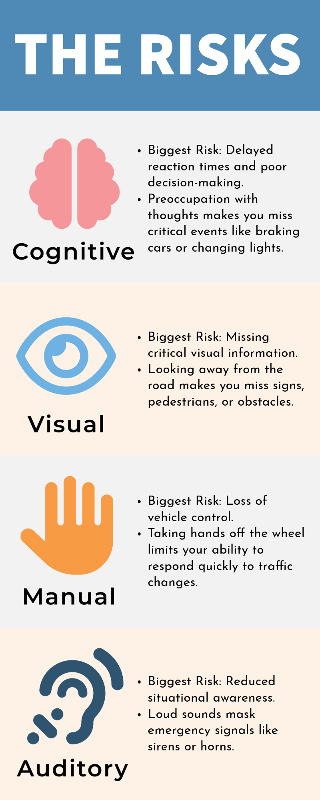

Visual
Eyes off the road.
Looking away from the road can mean missing something ahead.
- Glancing at a phone screen
- Turning to look at scenery
- Looking back at passengers
Awareness starts here
A commute to class. A drive back to campus. A trip home. Wherever you’re headed, give the road your attention. Learn what distraction looks like, then put your knowledge to the test.
Try the quick quiz01 / Understand the risks
Our campaign looks at four ways your attention can shift away from driving. One activity can involve more than one.
Visual
Looking away from the road can mean missing something ahead.
Manual
Other tasks can compete with the hands you need to control your car.
Cognitive
Attention can drift even when you’re looking straight ahead.
Auditory
Competing sounds can make it harder to focus on driving.
02 / Check your knowledge
Three everyday situations. Choose one answer for each, then see the explanations. Take the quiz while safely parked.
03 / Plan your next drive
Pick the steps you’ll take before your next trip, whether you’re heading to class, work, or home.
0 of 4 habits planned.
Keep learning
Explore the campaign infographic or find practical advice from road safety resources.
